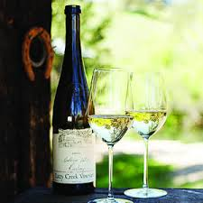
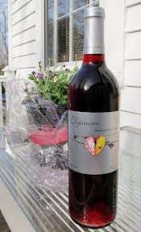
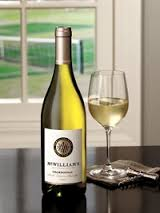
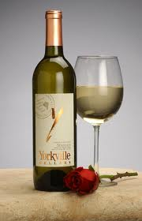
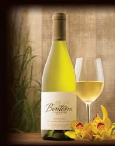

WHITE WINE
 |
PINOT GRIGIOThis is the second most favorite wine sold in the United States after chardonnay because it is cheap. Pinot Grigio is the Italian name for the Frenchor American wine varietal known as Pinot Gris, where is was known as Tokay. Light and refreshing, medium full bodied, crisp and dry, with forward fruit |
|  | RIESLINGRiesling is the great white wine grape of Germany and grows well in cooler climates. This wine is made primarily from the grapes that have long time to hang on the vine, frozen grapes. It is very high in acidity, and low in alcohol, making it light in body. Rieslings have flavors that range from very sweet to bone dry. Also, it has aromas of intense mineral, floral notes and petrol. Riesling pairs well with Asian cuisines. It produced at all levels of sweetness. Wonderfully crisp, light, dry wines. |
|  | MOSCATO/MUSCATMoscato is considered one of the world’s ancient grape varieties,grown mostly in Italy, Rhone and Australia. White wine obtained from this variety of grapes tastes always sweet and fruity. It is best consumed with desserts. Light-bodied, very aromatic and fruity; sometimes slightly effervescent or fully sparkling |
 |
SAUVIGNON BLANCIt also known as Fume Blanc. It is one of the most popular white wines because it can fit into the budgets of very many people. It is a clean, crisp, usually refreshing white or quite dry white wine. The wine's most dominant characteristic is an instantly recognizable aroma typically described as grassy or herbaceous. |
|  | CHARDONNAYIt known as the king of white wine and best selling white wine in the United Status. Chardonnay is a fruity, often oaky, and usually dry white wine. Of all the white wines, chardonnay is one of the most complex wines whose taste can vary from full in body with hints of oak, spice and butter to those that are golden and velvety. It is best paired with full flavored dishes that are roasted, grilled or sauteed. It is also used for Blanc de Blancs and Rose in champagne. Subtle fruit flavors and aromas consistent with apple, pear, pineapple, and orange |
 |
WHITE ZINFANDELLight pink It id a slightly sweet wines. It made from the Zinfandel grape by quickly removing the red skins from the grapes before much color is imparted to the wine. |
|  | SEMILLONSemillon is a golden-skinned grape used to make dry and sweet white wines, most notably in France and Australia. In France, the Sémillon grape is grown mostly in Bordeaux. There, it is blended with Sauvignon blanc and Muscadelle. When dry, it is referred to as Bordeaux blanc and is permitted to be made in the appellations of Pessac-Lacognan, Entre-deux-mers and other less renown regions. In this form, Semillon is generally a minor constituent in the blend. When used to make sweet white wines of Bordeaux, such as the wine of Sauternes and Barsac, it is often the dominant variety. In such wines, the Semillon is attacked by the "noble rot" of Botrytis cinerea which consumes the water and thus concentrates the sugar present in the grape pulp. |
|  | VIOGNIERViognier is a white wine grape of France. Viognier has a tropical aroma with peach and banana character. However, the alcohol level of this white wine is usually higher than other varieties. Viognier is best enjoyed before dinner. |